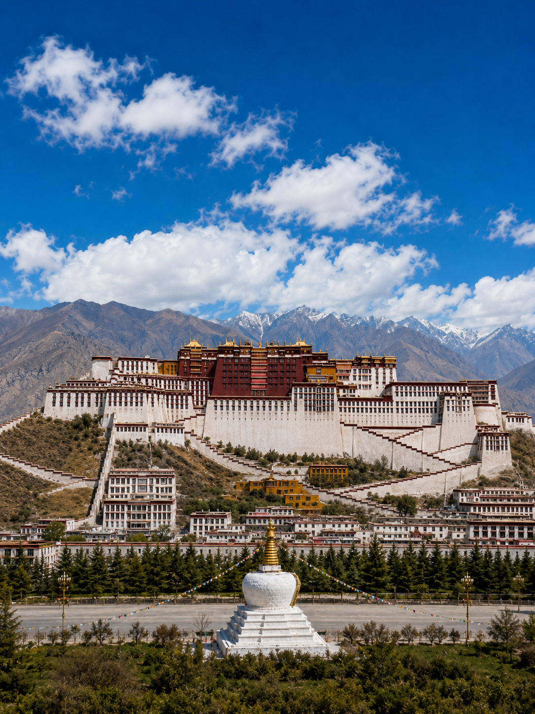

写在前面
有人说，拉萨是一座来了就不想走的城市。不是因为这里的海拔让人走不动，而是因为这里的时间流淌得格外缓慢。七个白天与夜晚，我在海拔3650米的日光之城，学会了如何把时间拉长。

Day 1—2：初见拉萨，慢适应
落地贡嘎机场已是中午，高原的阳光毫不吝啬地倾泻而下。机场大巴沿着雅鲁藏布江一路向东，一个小时后驶入拉萨市区，布达拉宫就那么突然地出现在路的尽头，红白相间的宫墙在蓝天下格外耀眼。
前两天的节奏很慢——在八廓街的甜茶馆里喝甜茶，看转经的人流顺时针走过。身体需要适应高原，心也需要。傍晚时分，坐在大昭寺门前的青石板上，看朝圣者磕长头，那种安静的虔诚会感染你。
Day 3：布达拉宫的朝圣
提前三天在小程序上抢到了布达拉宫的预约票。沿着之字形的坡道缓缓向上，每走几步就要停下来喘气——3700米的高度，连爬楼梯都变成了一种修行。白宫是达赖喇嘛的冬宫，红宫供奉着历代达赖的灵塔。最震撼的不是金碧辉煌的佛像，而是站在宫殿顶层的平台上，整个拉萨城尽收眼底——远处是连绵的雪山，近处是错落的白色民居。

Day 4：色拉寺的辩经声
坐公交车去色拉寺，车程不过二十分钟。下午三点，僧人们陆续聚集在辩经场，红色僧袍在树影下翻飞。击掌声、喝问声此起彼伏，虽然听不懂藏语经文，但那种专注与热烈彻底感染了我。傍晚回城，顺路去罗布林卡——达赖喇嘛的夏宫，园内古木参天，是拉萨最安静的一角。
Day 5：纳木错，天上的湖泊
凌晨五点半出发，四个小时车程翻过念青唐古拉山的垭口。当纳木错那一抹不可思议的蓝色出现在视野尽头时，全车人同时发出了惊叹。海拔4718米的湖面像一面巨大的蓝宝石，念青唐古拉山的雪峰倒映在水中。在湖边坐了两个小时，风很大，阳光很烈，但内心前所未有地平静。
Day 6：八廓街的烟火气
回到拉萨市区，花了一整天泡在八廓街。跟着转经的人流顺时针走了三圈，在光明港琼甜茶馆跟藏族阿妈拼桌喝甜茶（七毛钱一杯，把零钱放在桌上，服务员会自动续杯），在玛吉阿米的二楼吃藏式酸奶蛋糕，看楼下八廓街的人来人往。傍晚去冲赛康市场逛了一圈，买了些不明用途但看起来很厉害的藏香。
Day 7：告别，但不离开
最后一天没有安排任何行程。在客栈的楼顶晒太阳，再看一眼布达拉宫。去邮局寄了几张明信片，又去八廓街转了最后一圈。七天的拉萨之行，带走的不只是照片，还有一种被重新校准过的生活节奏。
实用信息
- 交通飞机直达拉萨贡嘎机场，或火车经青藏铁路到拉萨站
- 住宿建议住八廓街附近，方便逛街和适应高原
- 饮食甜茶馆是体验本地生活的最佳场所，藏面、甜茶、牦牛肉是标配
- 高原反应前48小时不要洗澡洗头、不要剧烈运动，多喝甜茶有助于缓解
- 最佳季节5—10月，冬季虽然冷但游客极少，阳光充足